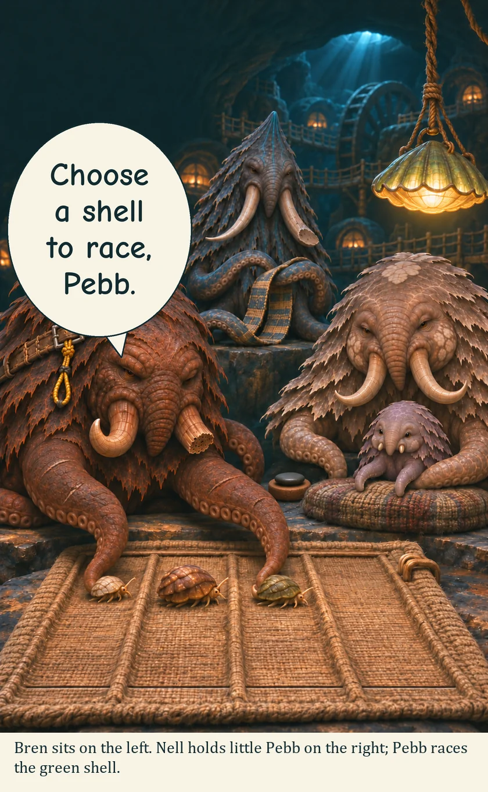
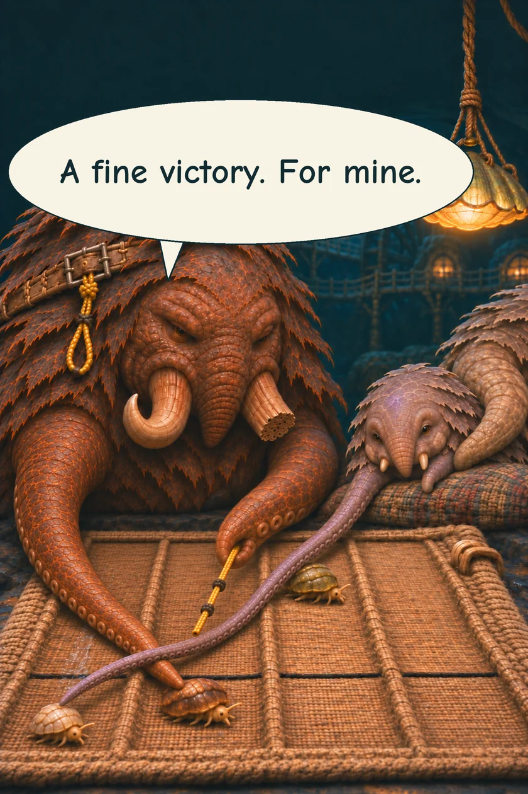
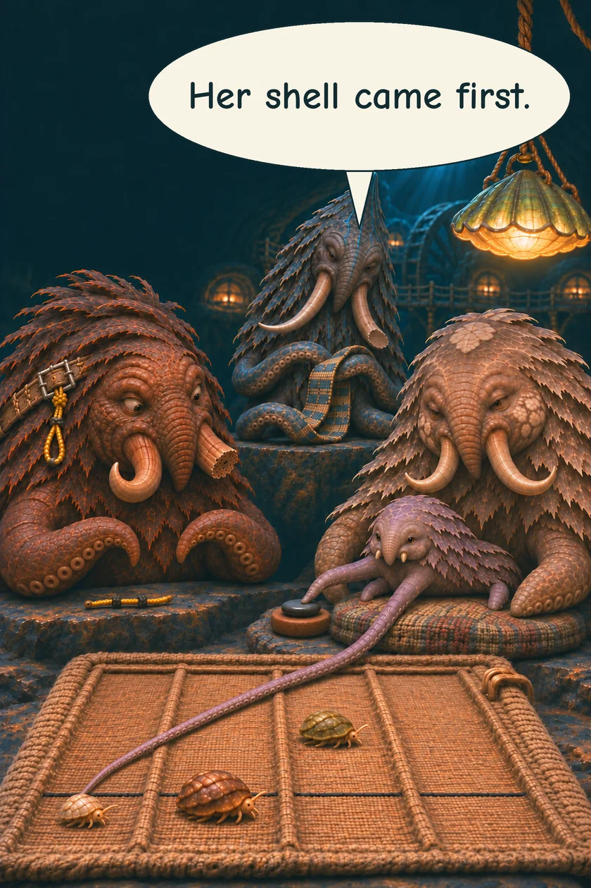
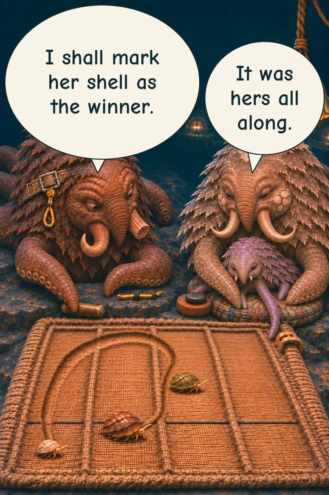
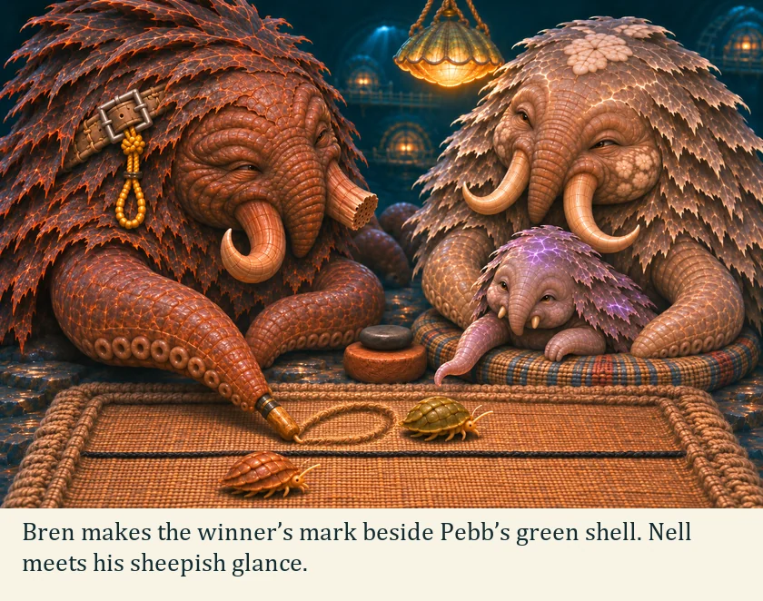
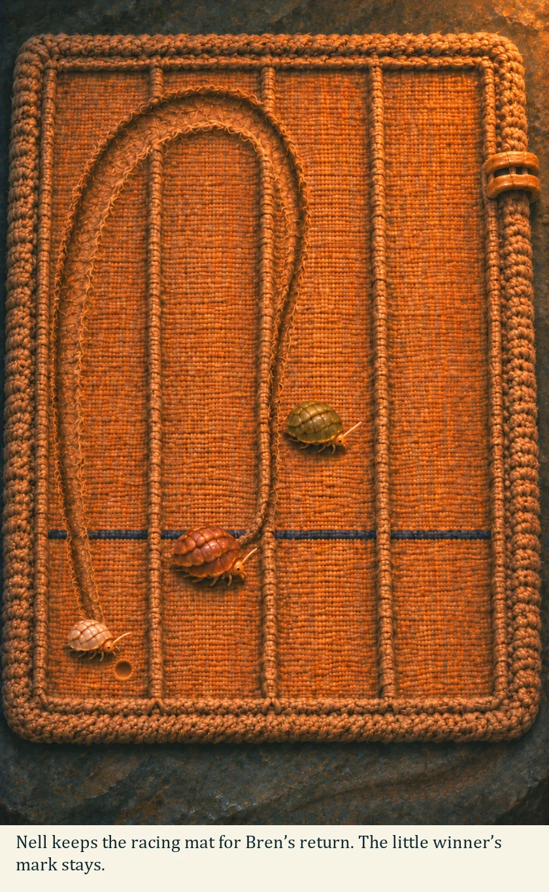

THE ORUUN · TEN YEARS BEFORE HUMANITY AWAKENS
The Wrong Winner
Bren offers Pebb a race, and himself a rather doubtful victory.
BREN · Net menderNELL · BroodkeeperPEBB · Youngest






Pebb keeps the victory. Bren has the pleasure of being caught.
Read the words
Bren sits on the left. Nell holds little Pebb on the right; Pebb races the green shell.
Choose a shell to race, Pebb.
A fine victory. For mine.
Her shell came first.
I shall mark her shell as the winner.
It was hers all along.
Bren makes the winner’s mark beside Pebb’s green shell. Nell meets his sheepish glance.
Nell keeps the racing mat for Bren’s return. The little winner’s mark stays.